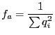
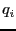

|
 |
 |
A Manual for use of PyPedal
A software package for pedigree analysis |
 |
 |
 |
7.4.7 Effective Ancestor Number
In populations that have undergone a bottleneck the effective number of founders computed using Lacy's ref640 approach is overestimated. Large contributions made by recent ancestors are more important to the population with respect to the loss of genetic diversity than equal contributions made long ago. Boichard et al. ref352 proposed a second measure of diversity to deal with such situations, the effective number of ancestors ( ), which considers the genetic contribution of all ancestors in the population, not just founders. The effective number of ancestors treats all ancestors in the population the same way, and is computed as:
), which considers the genetic contribution of all ancestors in the population, not just founders. The effective number of ancestors treats all ancestors in the population the same way, and is computed as:

where 
is the genetic contribution of the ith ancestor not explained by the previous i-1 ancestors.
The ancestors with the greatest contributions are selected iteratively. The number of ancestors with a positive genetic
contribution is less than or equal to the actual number of founders.
Release 2.0.3, documentation updated on November 29, 2005
Revised May 15, 2012.
See About this document... for information on suggesting changes.